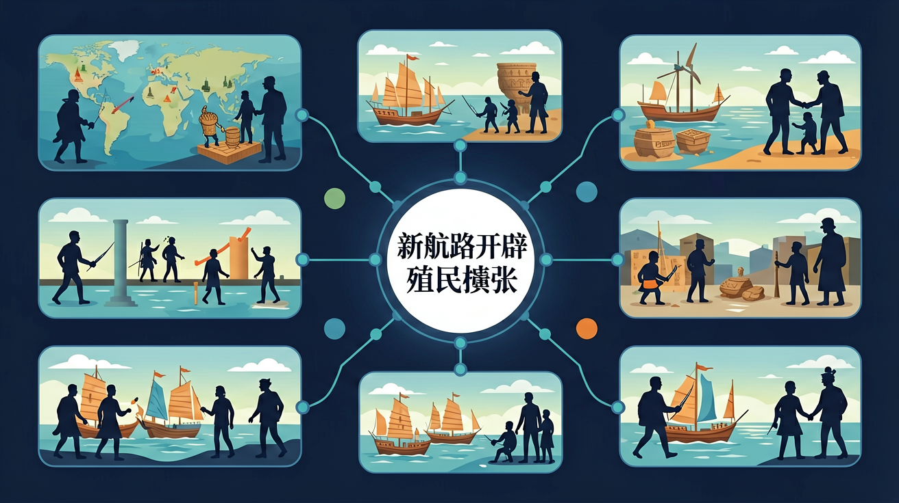

❓ 为什么欧洲人非要冒险去开辟新航路？
❓ 殖民扩张对美洲原住民到底有多残酷？
❓ 学了这段历史对我们现在的生活有啥影响？
学完这一课，这些问题你都能自信地回答。
🎯 能说出新航路开辟的3条直接原因
🎯 能分析殖民扩张对亚非拉地区的双重影响
🎯 能在地图上标注3条主要新航路
新航路开辟的根本动力是？
最早建立殖民据点的国家是？
新航路开辟与殖民扩张是高中历史的重要内容。本课程以马克思主义为指导，通过对中外重大历史事件、历史人物和历史现象的叙述，展现人类发展进程中丰富的历史文化遗产，以及人类社会从古至今、从分散到整体、社会形态从低级到高级的发展历程。
了解世界历史发展的多样性，理解和尊重世界各国各地区的文化传统，拓宽国际视野，形成开放的世界意识。
15–16世纪欧洲开辟新航路，世界开始连成整体，欧洲商业革命与殖民扩张随之展开。美洲等被卷入世界市场，非洲黑奴贸易悲惨展开，亚洲贸易格局变化。它是全球化的早期开端，伴随征服与掠夺。
点击时代按钮切换世界格局；结合本课主题观察空间分布。
1. 错误认为哥伦布"发现"美洲是单纯的科学探索。实际上1492年航行时西班牙王室给他的敕令明确写着"获取黄金和香料"（《圣塔菲协议》原件现存塞维利亚档案馆），其船队携带的玻璃珠等小商品就是用于贸易交换。学生容易受教科书简化表述影响，忽略殖民掠夺的本质属性。
2. 混淆"价格革命"与"商业革命"概念。16世纪西班牙从美洲运回约181吨黄金（据经济史学家Earl Hamilton统计），导致欧洲物价上涨4-5倍，这是"价格革命"；而荷兰东印度公司1602年成立后发展的股票交易、期货市场等金融创新才属于"商业革命"。两者虽有关联但驱动机制不同。
3. 高估达·伽马航线的直接贸易价值。1498年葡萄牙船队运回的香料虽价值是成本的60倍，但次年威尼斯商人立即通过红海航线压价竞争。真正垄断要等到1509年第乌海战摧毁阿拉伯舰队后，这个时间差常被忽略。
复制提示词到 AI 学伴，生成「新航路开辟与殖民扩张」的时间轴或事件提纲；也可以上传你手绘的示意图，请 AI 学伴点评。
复制后可粘贴到 AI 学伴继续对话。
动因：寻金、香料、奥斯曼阻隔、技术进步与人文驱动。影响分欧洲（资本原始积累）与亚非拉（灾难与结构变动），避免只歌颂“发现”。
常见误区：常见误区是忽视殖民扩张的双重性，只讲交流不讲灾难。
新航路开辟对世界最重要的影响是？
1. 现代物流中的"香料航线"算法优化。马士基航运公司2021年亚欧航线采用历史季风数据建模，将15世纪葡萄牙航海家记录的东北季风周期（10月-次年4月）转化为集装箱船班期算法，使鹿特丹港到新加坡航程缩短9天。
2. 墨西哥银比索的全球化遗产。西班牙在1545-1824年间从波托西银矿开采的4.5万吨白银，造就了最早的全球货币体系。今天美元符号"$"正是源自比索上的双柱图案，纽约联邦储备银行金库仍存有1840枚殖民时期银币作为历史储备。
3. 抗疟疾药物的植物溯源。金鸡纳树皮（奎宁原料）的欧洲需求直接催生了1640年代秘鲁的生态掠夺。现代制药公司如诺华通过分析殖民时期植物标本的DNA，在厄瓜多尔重新发现已灭绝的药用树种Cinchona officinalis var. javariensis。
1. 问题：为什么葡萄牙选择绕过非洲而非穿越地中海？分析线索：比较1488年迪亚士船队绕过好望角与1453年奥斯曼帝国攻占君士坦丁堡后的关税数据（威尼斯商船通行费上涨370%），注意葡萄牙亨利王子1434年就开始系统测绘西非海岸，比奥斯曼封锁早19年。
2. 问题：如何评价"哥伦布大交换"的生态影响？思考路径：对比1500年前后美洲与欧亚大陆的人口变化（美洲原住民减少90% vs 欧洲人口增长50%），观察马铃薯传入爱尔兰后的人口爆炸（1540-1840年从50万增至800万），注意烟草传播速度（1580-1610年英国消费量增长200倍）与肺癌医学记载的时间关联。
先要理解15世纪欧洲面临的现实困境：奥斯曼帝国控制传统商路后，威尼斯商人转售的香料价格暴涨，1453-1498年间胡椒每磅从1杜卡特涨到8杜卡特。这驱使葡萄牙亨利王子建立航海学校，系统改进卡拉维尔帆船（载货量比阿拉伯三角帆船大3倍）和象限仪（误差从5°缩小到1°）。接着看关键突破点：1488年迪亚士发现好望角时，船上携带的"帕德龙"石柱（现存里斯本海事博物馆）标明了经纬度测量新方法；1494年《托德西利亚斯条约》用教皇子午线划分势力范围，实为最早的国际海洋法实践。最后聚焦殖民体系的运作机制：西班牙在墨西哥推行"米塔制"强迫劳动（每周1/7壮丁下矿），导致波托西银矿1545-1600年产量占全球60%；而荷兰1602年发明的股份制让东印度公司募集到650万荷兰盾资本（相当于今日20亿美元），阿姆斯特丹证券交易所的股价波动记录显示，1622年香料贸易利润率仍高达400%。这些技术、制度和暴力的结合，彻底重构了全球文明格局。
关于新航路开辟的影响，下列哪项表述最准确？
本课程以马克思主义为指导，通过对中外重大历史事件、历史人物和历史现象的叙述，展现人类发展进程中丰富的历史文化遗产，以及人类社会从古至今、从分散到整体、社会形态从低级到高级的发展历程。
把卡片拖到核心概念 / 方法技能 / 应用情境 / 常见误区。
拖完 4 项后自动判分。
分析新航路开辟对欧洲资本主义发展和全球贸易的影响
先独立作答，再点选项查看对错与错因。
下列哪项是达·伽马开辟新航路的直接原因？
新航路开辟后，下列哪项不是欧洲国家的主要活动？
新航路开辟对欧洲的影响不包括？
达·伽马于____年率领船队绕过好望角，首次开辟了从欧洲直达印度的海上航线。
答案：1497
1497年是达·伽马开辟新航路的年份，这是重要的历史事件时间点
新航路开辟后，欧洲国家开始在亚洲、非洲和美洲建立____，进行殖民扩张。
答案：殖民地
殖民地的建立是新航路开辟后欧洲国家的主要活动之一
（升学题）三角贸易中利润率最高的商品是？
（迁移题）下列哪项现代现象与新航路开辟性质最相似？
（综合题）下列哪组数据最能反映殖民影响？
✅ 北欧维京人早于哥伦布500年到达北美
💡 教科书强调哥伦布的'发现'意义
✅ 达伽马绕好望角到印度，麦哲伦穿越太平洋
💡 两条航线都涉及印度洋区域
口诀：黄金香料宗教狂，达伽马到印度洋，殖民血泪不能忘
类比：就像外卖平台开拓新市场，欧洲人寻找新航路也是为获取稀缺资源
复述本课两个核心概念的定义。
用本课方法分析一个新例子。
有同学认为：认为哥伦布是第一个到达美洲的欧洲人 —— 请说明错在哪里。
有同学认为：混淆麦哲伦船队与达伽马船队的航线 —— 请说明错在哪里。
把还没弄明白的地方写下来问 AI 学伴。它会先帮你找到卡住的地方，再给你一个小小的提示，让你自己往前走一步。